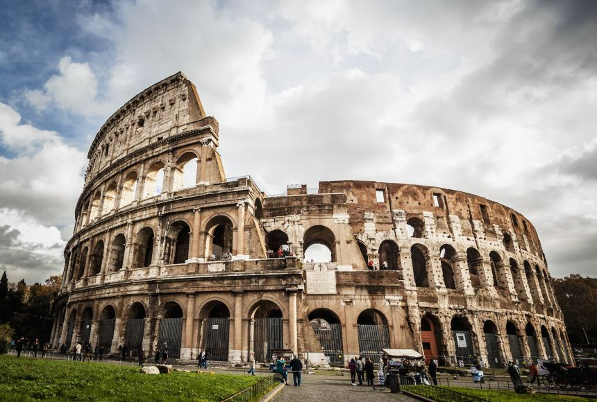
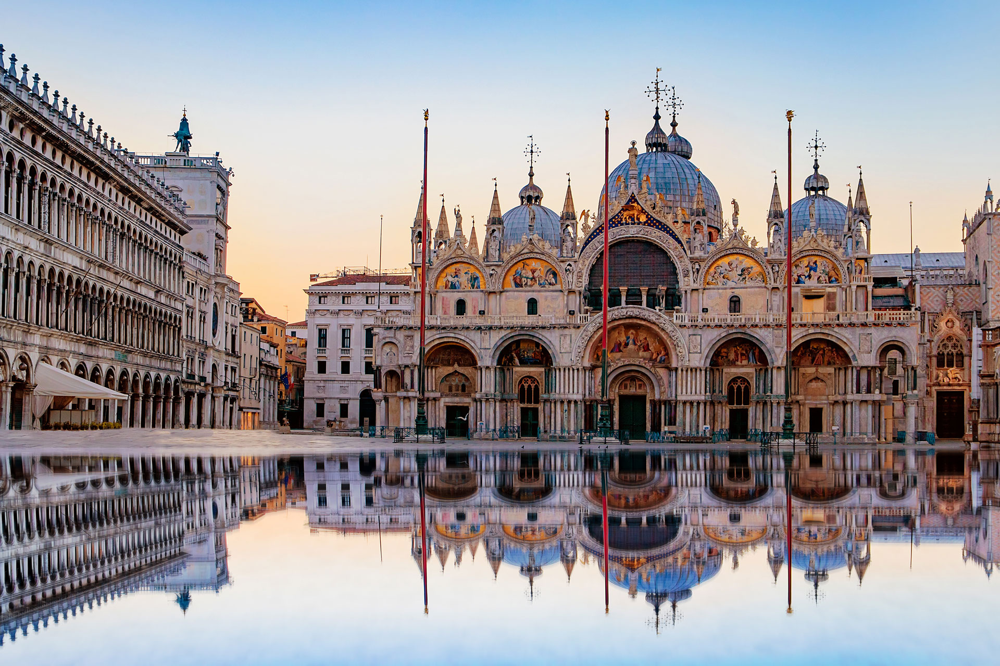
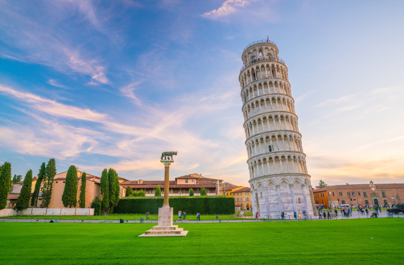
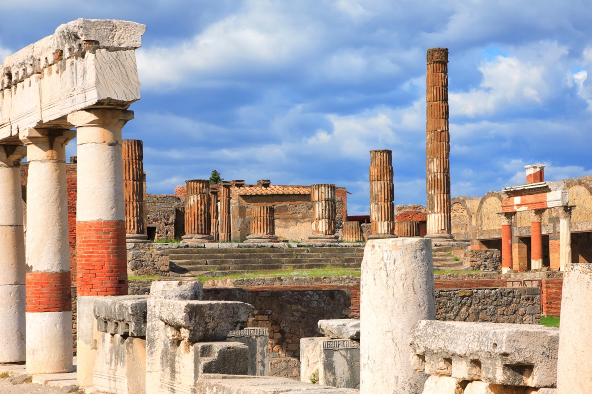
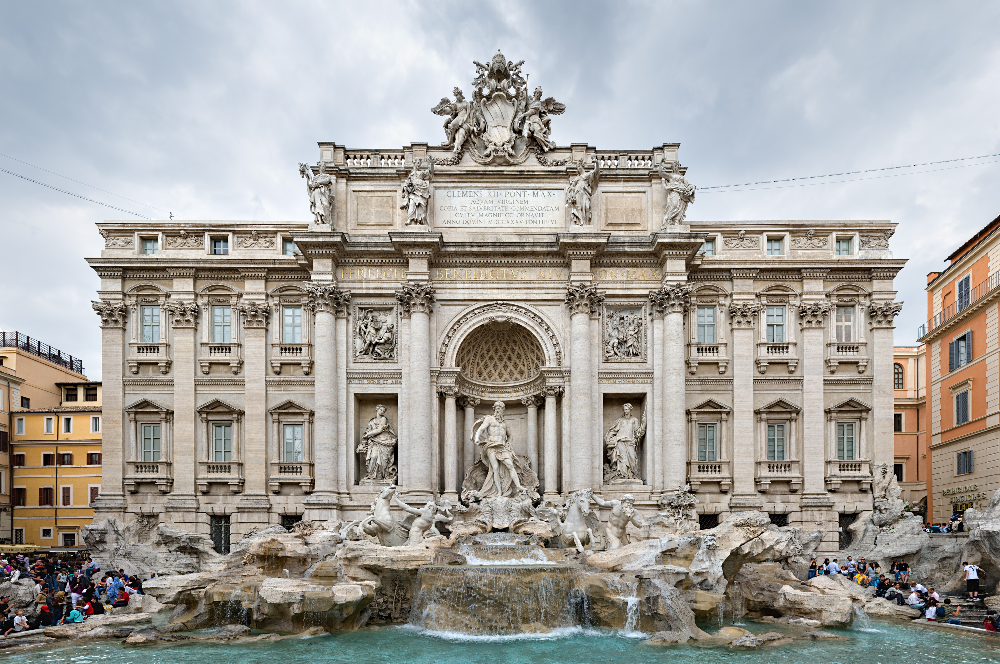
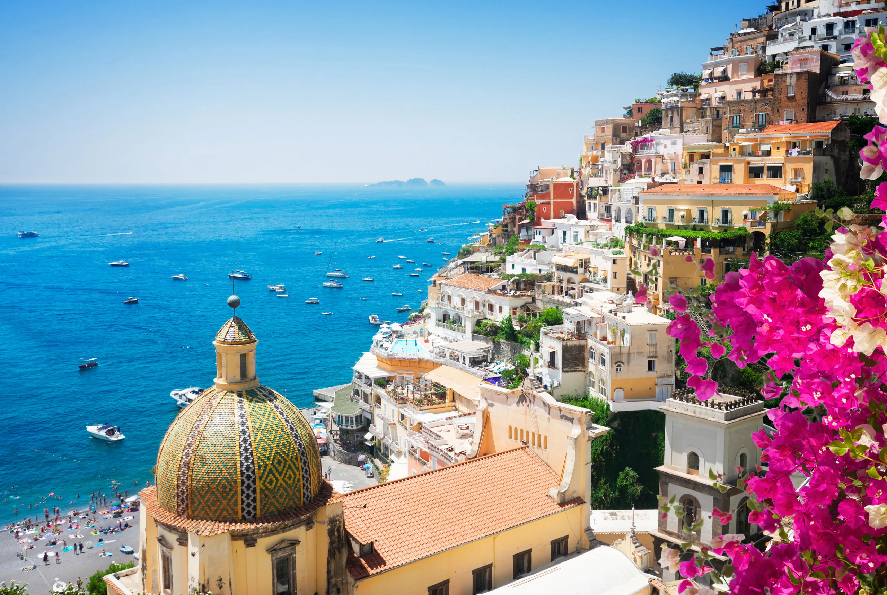

Italia este un stat unitar, republică parlamentară, aflat în Europa de Sud. Datorită formei părții sale continentale, este denumită pe plan intern lo Stivale („Cizma”). Cu 61 de milioane de locuitori, este a cincea cea mai populată țară a Europei. Italia este o țară dezvoltată și are a treia cea mai mare economie din zona Euro și a opta din lume după PIB nominal.
Din vremurile antice, culturile etruscă, Magna Graecia și altele au înflorit pe teritoriul actual al Italiei, până când au fost în cele din urmă absorbite de Roma, care timp de secole a rămas centrul politic și religios al civilizației occidentale, capitala Imperiului Roman și apoi centrul creștinismului.
Italia are mai multe situri în patrimoniul mondial UNESCO (51) decât orice altă țară din lume, și are bogate colecții de artă, cultură și literatură din multe perioade diferite. Țara a avut o influență culturală foarte largă pe plan mondial, și datorită numeroșilor italieni emigrați în alte țări. Mai mult, în toată țara se află circa 100.000 de monumente de orice fel (muzee, palate, clădiri, statui, biserici, galerii de artă, vile, fântâni arteziene, case istorice și situri arheologice).
DATE GENERALE
Denumirea oficiala: Republica italiană
Fusul orar: UTC+1/+2
Capitala: Roma
Suprafata: 301.338 km2
Moneda: euro
Limba oficiala: italiana
Prefix telefonic international: +39
ATRACTII TURISTICE

Colosseumul este un monument istoric și turistic aflat in centrul Romei vizitat de foarte mulți turiști din toată lumea. El este probabil cea mai impresionantă clădire-ruină a Imperiului Roman. Colosseumul era cea mai mare construcție a vremurilor sale după piramide și astăzi este cel mai mare amfiteatru antic care poate fi vizitat in Italia.Construcția a început sub conducerea împăratului Vespasian în anul 72 d. Hr. și a fost finalizată în anul 80 d.Hr. sub conducerea succesorului său și moștenitorul Titus.
Colosseumul fost folosit pentru concursuri cu gladiatori și spectacole publice, cum ar fi bătălii maritime pentru o scurtă perioadă de timp, când hipogeumul a fost în curând completat cu mecanisme de susținere a celorlalte activități, vânători de animale, execuții, reînnoiri ale unor bătălii celebre și drame bazate pe mitologia clasică. Clădirea a încetat să fie folosită pentru divertisment în epoca medievală timpurie. Mai târziu a fost refolosită în astfel de scopuri, cum ar fi locuințe, ateliere, cartiere pentru o ordine religioasă, o cetate, o carieră și un altar creștin.
Deși a fost ruinat parțial din cauza pagubelor provocate de cutremure și hoți de piatră, Colosseum este încă un simbol iconic al Romei Imperiale și este listat ca una dintre Cele șapte minuni ale lumii moderne. Este una dintre cele mai populare atracții turistice ale Romei și are, de asemenea, legături cu Biserica Romano-Catolică, deoarece în fiecare Vinerea Mare Papa conduce o procesiune cu torțe "Calea Crucii", care începe în zona din jurul Colosseumului.

Bazilica Sfântul Marcu este catedrala patriarhală a Veneției, cu hramul Evaghelistului Marcu, care are drept simbol Leul Sfântului Marcu. Lăcașul îmbină armonios stilul gotic cu arhitectura bizantină. Bazilica este situată în Piața San Marco, aflându-se lângă Palatul Dogilor. Datorita infatisarii sale opulente, a mozaicurilor bizantine aurite cat si a statuilor sale ca simbol al prosperitatii si fortei venetiene din secolul al XI-lea, basilica a fost supranumita pe drept cuvant si "Chiesa d'Oro", adica "Biserica de Aur".

Turnul din Pisa este cea mai faimoasă clădire înclinată din lume și punctul de reper al orașului Pisa din Italia. Turnul a fost planificat ca o campanilă pentru Domul din Pisa. După doisprezece ani de la punerea pietrei de temelie, la 9 august 1173, când construcția ajunsese la etajul al treilea, din cauza proastei calități a solului, constituit din noroi argilos și nisip, turnul începea să se încline în direcția sud-est. Timp de o sută de ani construcția a fost stopată. Următoarele patru etaje au fost construite oblic, pentru a compensa partea înclinată. După aceea, construcția a trebuit să fie întreruptă din nou, până în 1372, când turnul-clopotniță a fost finalizat. Astăzi turnul se înclină cu 3,97 grade față de axa sa verticală, care este de aproximativ 4 metri. Motivul principal al acestei caracteristici este geologia specială a zonei: Pisa se află pe un teren nisipos și argilos, care are puțin sprijin pentru structuri.
Datorită importanței sale pentru industria turismului din Pisa, guvernul italian s-a implicat serios în ultima consolidare care a început în anul 1990. În decembrie 2001 turnul a fost declarat stabil și sigur pentru 300 de ani și a fost redeschis accesului publicului.

Pompeii

Fontana di Trevi

Coasta Amalfi
TRAVEL TIPS
E mai facil sa folosesti sistemul de transport public.
 ITALIA
ITALIA